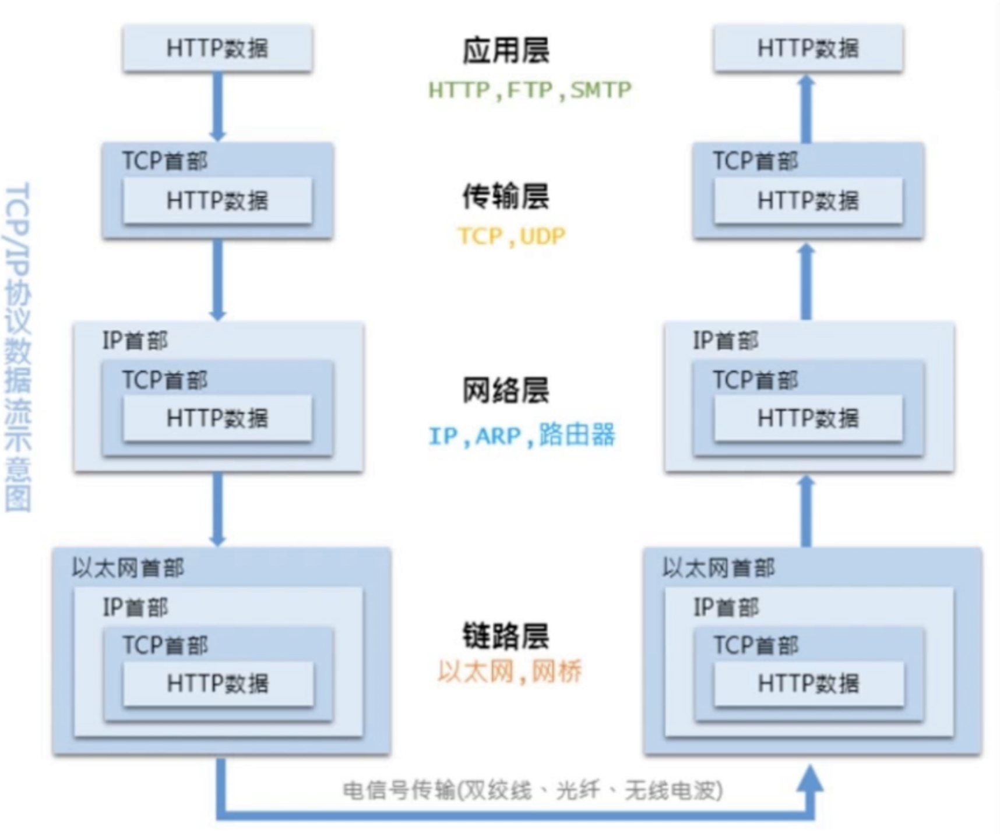
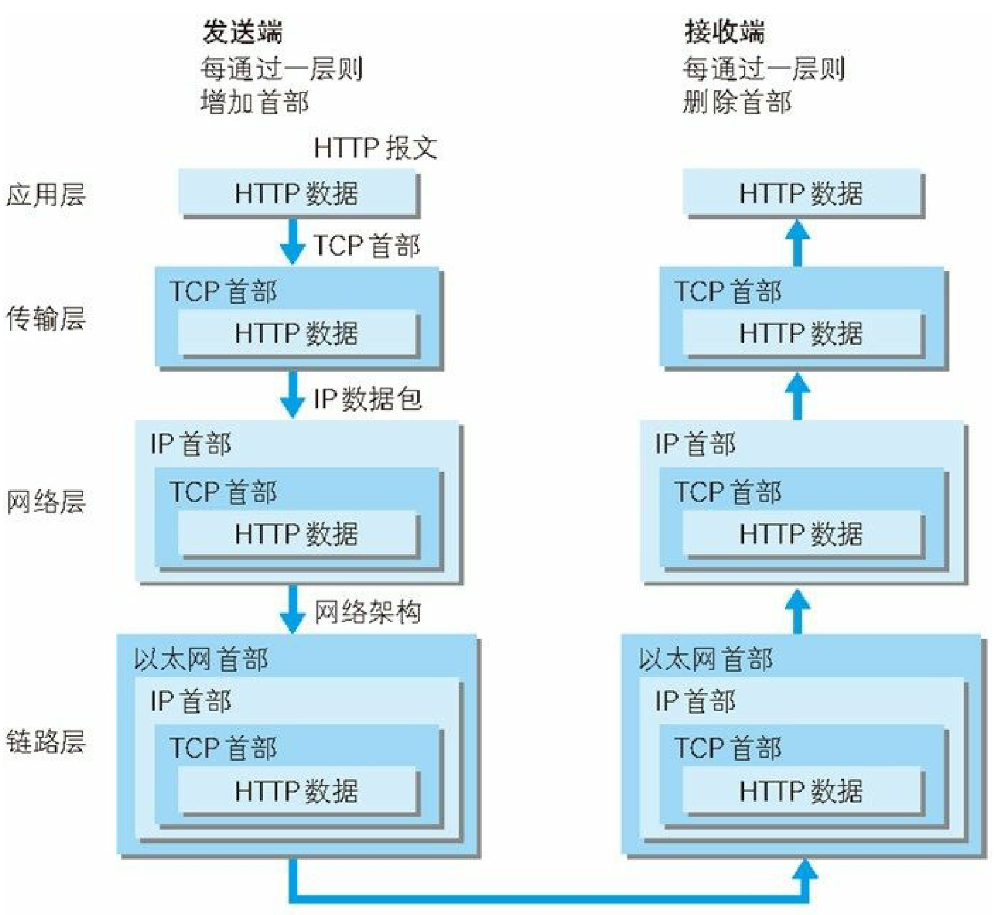
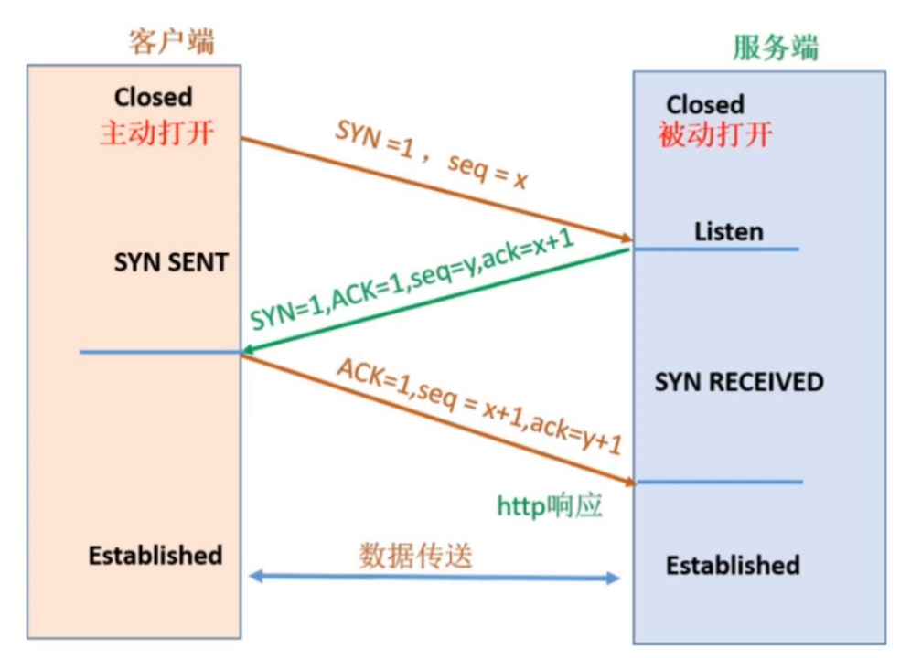
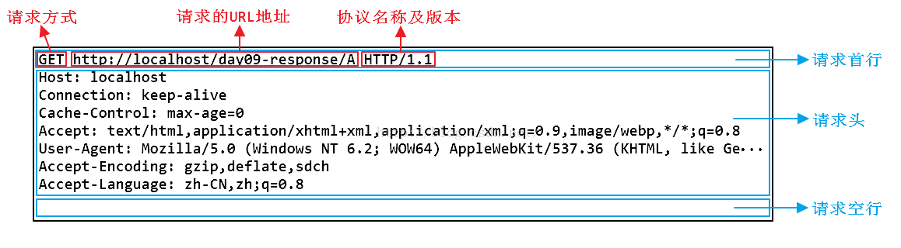
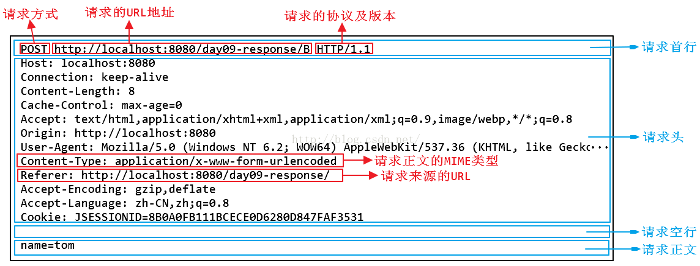
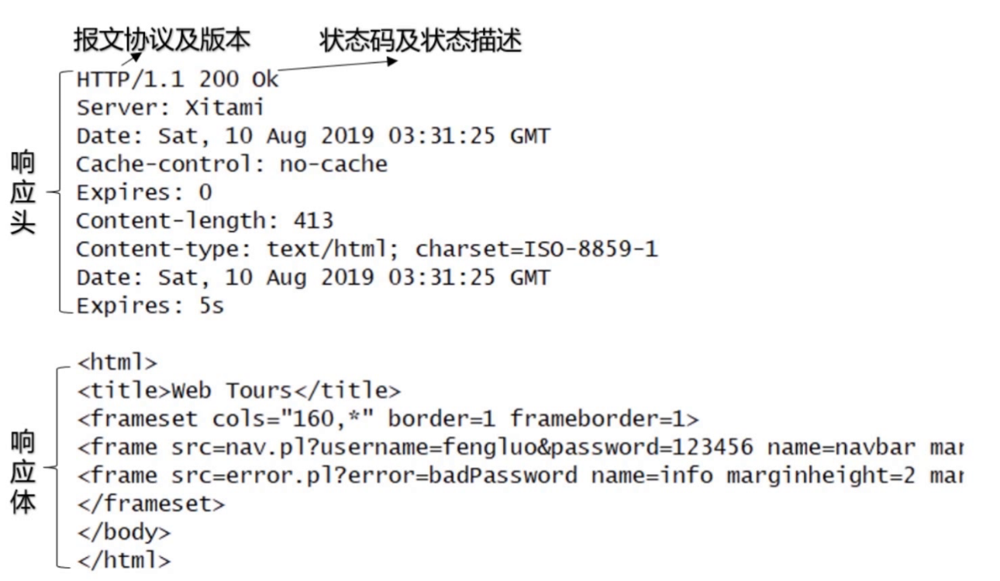
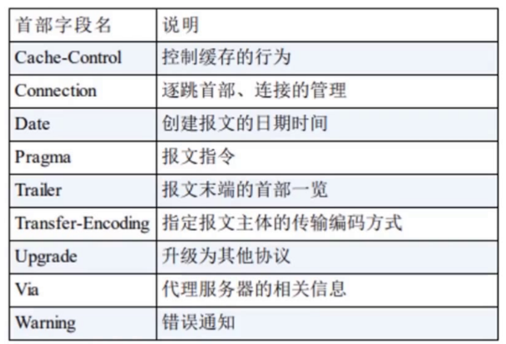
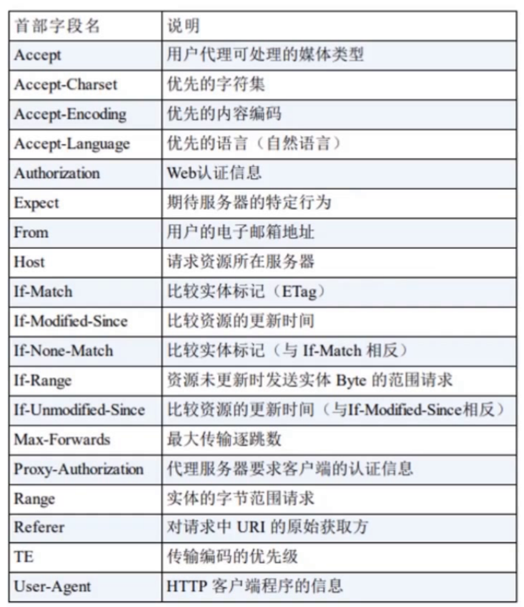
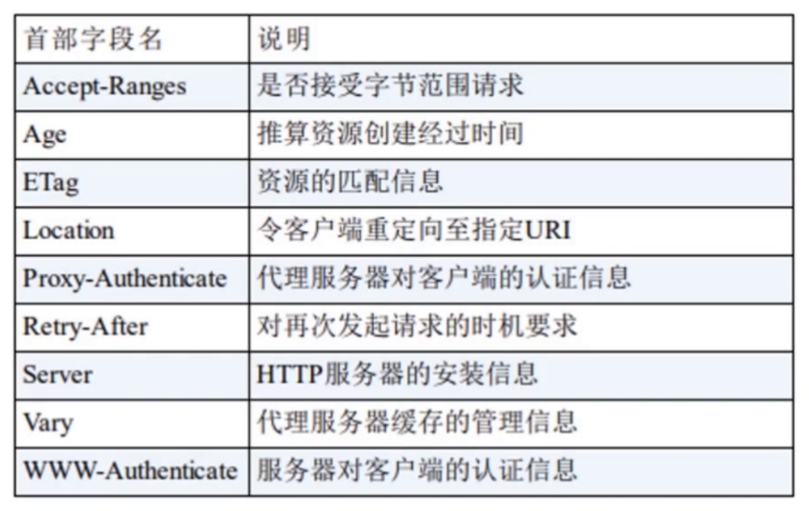
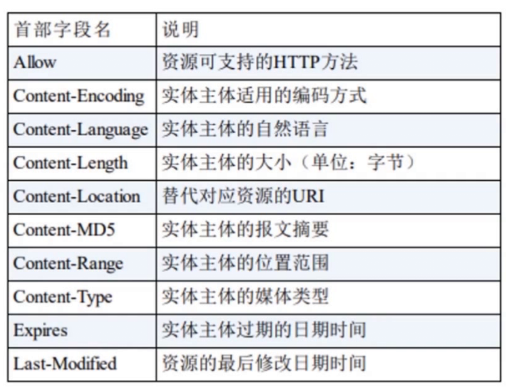

学习备注
ssession 和 cookie 的底层工作原理需要深入理解一下
前言
- 学习了慕课网的《编程必备基础－大话HTTP协议》课程，本篇文章是学习笔记。以便温习
HTTP基础
http协议简介
- 超文本传输协议（英语：HyperText Transfer Protocol，缩写：HTTP）
- 一种用于分布式、协作式和超媒体信息系统的应用层协议，（属于应用层面向对象的协议）
- 设计HTTP最初的目的是为了提供一种发布和接收HTML页面的方法。通过HTTP或者HTTPS协议请求的资源由统一资源标识符（Uniform Resource Identifiers，URI）来标识。
- web
web是一种基于超文本和http的全球性的、动态交互的、跨平台的分布式图形信息系统
http协议历史版本
- 版本
超文本传输协议已经演化出了很多版本，它们中的大部分都是向下兼容的。在 RFC 2145 中描述了HTTP版本号的用法。客户端在请求的开始告诉服务器它采用的协议版本号，而后者则在响应中采用相同或者更早的协议版本。
- HTTP/0.9（1991年）
已过时。只接受GET一种请求方法，没有在通讯中指定版本号，且不支持请求头。由于该版本不支持POST方法，因此客户端无法向服务器传递太多信息。
- HTTP/1.0（1996年5月）
这是第一个在通讯中指定版本号的HTTP协议版本，至今仍被广泛采用，特别是在代理服务器中
- HTTP/1.1（1997年1月）
持久连接被默认采用，并能很好地配合代理服务器工作。还支持以管道方式在同时发送多个请求，以便降低线路负载，提高传输速度。
HTTP/1.1相较于HTTP/1.0协议的区别主要体现在：
- 缓存处理
- 带宽优化及网络连接的使用
- 错误通知的管理
- 消息在网络中的发送
- 互联网地址的维护
- 安全性及完整性
- HTTP/2（2015年5月）
于2015年5月作为互联网标准正式发布。
- HTTP 3.0 / QUIC协议
TCP/IP
HTTP协议是构建在TCP/IP协议之上的，是TCP/IP协议的一个子集
TCP/IP协议族
tcp/ip协议其实是一系列与互联网相关联的协议集合起来的总称
分层管理是tcp/ip协议的重要特征
tcp/ip协议族分层
| 分层 | 说明 | 举例 |
|---|---|---|
| 应用层 | 应用层一般是我们编写的应用程序，决定了向用户提供的用户服务，应用层可以通过系统调用与传输层进行通信 | ftp、dns、http |
| 传输层 | 传输层通过系统调用向应用层提供处于网络连接中的两台计算机的数据传输功能 | tcp（面向连接）、udp（无连接） |
| 网络互联层 | 网络层用来处理网络上流动的数据包，数据包是网络上数据传输的最小数据单位，该层规定了通过怎样的路径（传输线路）到达对方计算机，并把数据包传输给对方 | |
| 数据链路层 | 链路层用来处理连接网络的硬件部分，包括控制操作系统、硬件设备驱动NIC以及光纤等物理可以见部分，硬件上的范畴均在链路层的作用范围之内 |
数据包的封装过程

HTTP数据传输过程
- 使用tcp协议进行通信的双方必须先建立连接，然后才能开始传输数据，为了确保连接双方可靠性，在建立连接时，tcp协议采用了三次握手策略。


传输层 TCP三次握手

- 第一次握手
客户端发送SYN标志的连接请求报文段，然后进入SYN_SEND状态，等待服务端的确认。
服务端接收到信息后，此时，服务端知道：客户端可以成功发送数据，服务端可以接受数据
- 第二次握手
服务端接收到客户端的SYN报文段后，需要发送ACK信息对这个SYN报文段进行确认，同时还要发送自己的SYN请求信息。服务端会将上述的信息放到一个报文段（SYN+ACk报文段）中，一并发送给客户端，此时服务端将会进入SYN_RECEIVED状态
客户端接收到信息后，此时，客户端知道：自己可以发送数据，可以接收数据，服务端可以接收数据，服务端可以发送数据
- 第三次握手
客户端接收到服务端的SYN+ACK报文段后，会向服务端发送ACK确认报文段，这个报文段发送完毕后，客户端和服务端都进入ESTABLISHED状态，完成tcp三次握手
服务端接收到信息后，服务端知道自己可以成功发送数据，客户端可以接收数据
- 三次握手的意义
服务端和客户端都确认彼此都能成功发送和接收数据
DNS
- dns服务提供 域名到ip地址之间的解析服务
- cdn负责转发（可以设置是否转发）
- dns服务
系统配置文件
本地dns服务
高级dns服务
根dns服务
HTTP协议结构和通讯原理
http协议特点
- 支持客户/服务器模式
由客户端向服务器发出请求，服务器端响应请求，并进行相应服务
- 简单快速
客户向服务器请求服务时，只需传送请求方法和路径
http协议简单，使得http服务器的程序规模小，通信速度快
- 灵活
http允许传输任意类型的对象
正在传输的数据类型由Content-Type标记
- 无连接
无连接的含义是：限制每次连接只处理一个请求
服务器处理完客户端的请求，并收到客户端的应答后即断开连接
采用这种方式可以节省传输时间
- 无状态
http协议是无状态协议
无状态是指协议对事物处理没有记忆能力，缺少状态意味着如果后续处理需要前面的信息，则必须重传，这样可能导致每次每次连接传送的数据量增大
在服务区不需要先前的信息时，它应答就快
URI & URL & URN
URI
统一资源标识符（英语：Uniform Resource Identifier，缩写：URI）在电脑术语中是一个用于标识某一互联网资源名称的字符串
a URI 可以进一步分为定位符、名字或者两者都是
URI可以分为URl 和 URN，或者同时具备locators和names特性的一个东西
URL
Uniform Resource Locator（URL）是URI的子集，除了确定一个资源，还提供一种该资源的主要访问机制（如网络“位置”）
URN
URN是唯一标识的一部分，是身份信息
URL是URI的一种
URI和URL最大的差别是访问机制
URN的作用就好像一个人的名字，URL就好像一个人的地址
URN确定了东西的身份，URL提供了找到它的方式
HTTP报文结构



HTTP报文头
- 在HTTP1.1里一共规范了47种报文头字段
通用报文头

请求报文头

响应报文头

实体报文头

常用报文头解析
- Accept
| 作用 | 浏览器可以接收的媒体类型 |
|---|---|
| 举例 | Accept: text/html （代表浏览器可以接受的返回类型为text/html，也就是我们常说的html文档，如果服务器无法返回text/html类型的数据，服务区应该返回一个406错误（Non Acceptable）） |
| Accept: */* （代表浏览器可以处理所有类型） | |
| 优先级 | 如果想要给显示的媒体类型增加优先级，则使用q= 来额外表示权重值；q的范围是0～1，（可精确到小数点后3位）。且1为最大值。不指定权重q值时，默认权重q=1.0。当服务器提供多种内容时，将会首先返回权重值最高的媒体类型 |
- Accept-Encoding
| 作用 | 浏览器申明自己的编码方法，通常指定压缩方法，是否支持压缩，支持什么压缩方法（gzip，deflate） |
|---|---|
| 举例 | Accept-Encoding: gzip,deflate; |
- Accept-Language
| 作用 | 浏览器申明自己接收的语言 |
|---|---|
| 举例 | Accept-Language: zh-cn,zh,q=0.7,en-us,en,q=0.3 |
- Connection
Connection: kite-alive;（当一个网页打开完成后，客户端和服务器之间用于传输HTTP数据的TCP连接不会关闭，如果客户端再次访问这个服务器上的网页，会继续使用这一条已经建立的连接）
Connection: close;
- Host
作用：请求报头域主要用于指定被请求资源的Internet主机和端口号，它通常从HTTP URL中提取出来
- Referer
当浏览器向web服务器发送请求的时候，一般会带上Referer，告诉服务器我是从哪个页面链接过来的。服务器藉此可以获得一些信息用于处理
- User-Agent
作用：告诉HTTP服务器，客户端使用的操作系统和浏览器的名称和版本
- Content-Type
作用：说明了报文体内对象的媒体类型
常见的媒体格式类型如下：
- text/html ： HTML格式
- text/plain ：纯文本格式
- text/xml ： XML格式
- image/gif ：gif图片格式
- image/jpeg ：jpg图片格式
- image/png：png图片格式
以application开头的媒体格式类型：
- application/xhtml+xml ：XHTML格式
- application/xml： XML数据格式
- application/atom+xml ：Atom XML聚合格式
- application/json： JSON数据格式
- application/pdf：pdf格式
- application/msword ： Word文档格式
- application/octet-stream ： 二进制流数据（如常见的文件下载）
- application/x-www-form-urlencoded ： \
另外一种常见的媒体格式是上传文件之时使用的：
- multipart/form-data ： 需要在表单中进行文件上传时，就需要使用该格式
HTTP请求方法
HTTP状态码分类
| 分类 | 分类描述 |
|---|---|
| 1** | 信息，服务器收到请求，需要请求者继续执行操作 |
| 2** | 成功，操作被成功接收并处理 |
| 3** | 重定向，需要进一步的操作以完成请求 |
| 4** | 客户端错误，请求包含语法错误或无法完成请求 |
| 5** | 服务器错误，服务器在处理请求的过程中发生了错误 |
HTTP状态码列表
| 状态码 | 状态码英文名称 | 中文描述 |
|---|---|---|
| 100 | Continue | 继续。客户端应继续其请求 |
| 101 | Switching Protocols | 切换协议。服务器根据客户端的请求切换协议。只能切换到更高级的协议，例如，切换到HTTP的新版本协议 |
| 200 | OK | 请求成功。一般用于GET与POST请求 |
| 201 | Created | 已创建。成功请求并创建了新的资源 |
| 202 | Accepted | 已接受。已经接受请求，但未处理完成 |
| 203 | Non-Authoritative Information | 非授权信息。请求成功。但返回的meta信息不在原始的服务器，而是一个副本 |
| 204 | No Content | 无内容。服务器成功处理，但未返回内容。在未更新网页的情况下，可确保浏览器继续显示当前文档 |
| 205 | Reset Content | 重置内容。服务器处理成功，用户终端（例如：浏览器）应重置文档视图。可通过此返回码清除浏览器的表单域 |
| 206 | Partial Content | 部分内容。服务器成功处理了部分GET请求 |
| 300 | Multiple Choices | 多种选择。请求的资源可包括多个位置，相应可返回一个资源特征与地址的列表用于用户终端（例如：浏览器）选择 |
| 301 | Moved Permanently | 永久移动。请求的资源已被永久的移动到新URI，返回信息会包括新的URI，浏览器会自动定向到新URI。今后任何新的请求都应使用新的URI代替 |
| 302 | Found | 临时移动。与301类似。但资源只是临时被移动。客户端应继续使用原有URI |
| 303 | See Other | 查看其它地址。与301类似。使用GET和POST请求查看 |
| 304 | Not Modified | 未修改。所请求的资源未修改，服务器返回此状态码时，不会返回任何资源。客户端通常会缓存访问过的资源，通过提供一个头信息指出客户端希望只返回在指定日期之后修改的资源 |
| 305 | Use Proxy | 使用代理。所请求的资源必须通过代理访问 |
| 306 | Unused | 已经被废弃的HTTP状态码 |
| 307 | Temporary Redirect | 临时重定向。与302类似。使用GET请求重定向 |
| 400 | Bad Request | 客户端请求的语法错误，服务器无法理解 |
| 401 | Unauthorized | 请求要求用户的身份认证 |
| 402 | Payment Required | 保留，将来使用 |
| 403 | Forbidden | 服务器理解请求客户端的请求，但是拒绝执行此请求 |
| 404 | Not Found | 服务器无法根据客户端的请求找到资源（网页）。通过此代码，网站设计人员可设置”您所请求的资源无法找到”的个性页面 |
| 405 | Method Not Allowed | 客户端请求中的方法被禁止 |
| 406 | Not Acceptable | 服务器无法根据客户端请求的内容特性完成请求 |
| 407 | Proxy Authentication Required | 请求要求代理的身份认证，与401类似，但请求者应当使用代理进行授权 |
| 408 | Request Time-out | 服务器等待客户端发送的请求时间过长，超时 |
| 409 | Conflict | 服务器完成客户端的 PUT 请求时可能返回此代码，服务器处理请求时发生了冲突 |
| 410 | Gone | 客户端请求的资源已经不存在。410不同于404，如果资源以前有现在被永久删除了可使用410代码，网站设计人员可通过301代码指定资源的新位置 |
| 411 | Length Required | 服务器无法处理客户端发送的不带Content-Length的请求信息 |
| 412 | Precondition Failed | 客户端请求信息的先决条件错误 |
| 413 | Request Entity Too Large | 由于请求的实体过大，服务器无法处理，因此拒绝请求。为防止客户端的连续请求，服务器可能会关闭连接。如果只是服务器暂时无法处理，则会包含一个Retry-After的响应信息 |
| 414 | Request-URI Too Large | 请求的URI过长（URI通常为网址），服务器无法处理 |
| 415 | Unsupported Media Type | 服务器无法处理请求附带的媒体格式 |
| 416 | Requested range not satisfiable | 客户端请求的范围无效 |
| 417 | Expectation Failed | 服务器无法满足Expect的请求头信息 |
| 500 | Internal Server Error | 服务器内部错误，无法完成请求 |
| 501 | Not Implemented | 服务器不支持请求的功能，无法完成请求 |
| 502 | Bad Gateway | 作为网关或者代理工作的服务器尝试执行请求时，从远程服务器接收到了一个无效的响应 |
| 503 | Service Unavailable | 由于超载或系统维护，服务器暂时的无法处理客户端的请求。延时的长度可包含在服务器的Retry-After头信息中 |
| 504 | Gateway Time-out | 充当网关或代理的服务器，未及时从远端服务器获取请求 |
| 505 | HTTP Version not supported | 服务器不支持请求的HTTP协议的版本，无法完成处理 |